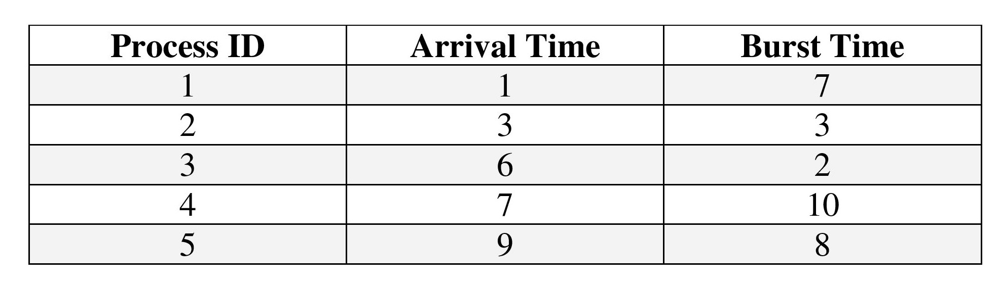
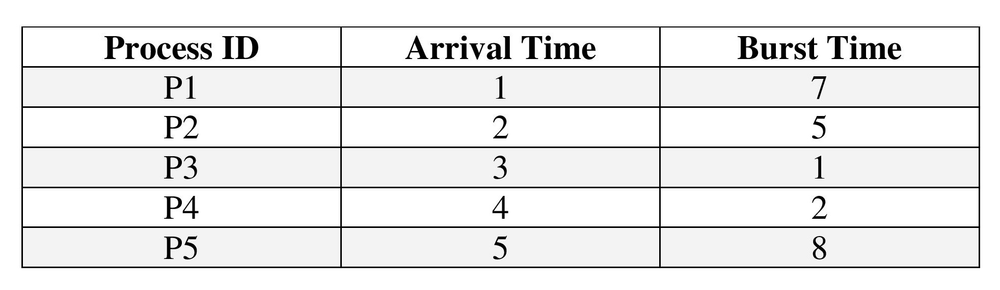
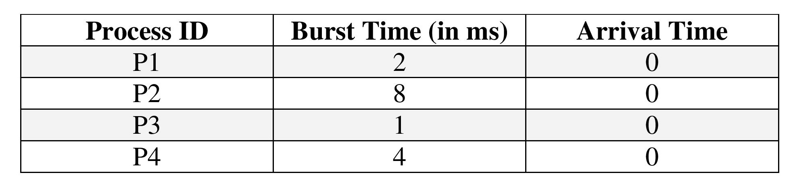
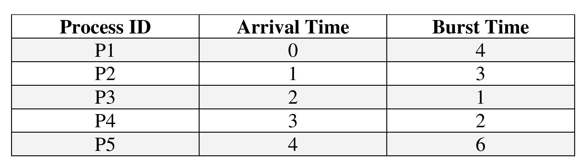

In the following example, there are five jobs named as P1, P2, P3, P4 and P5.
Their arrival time and burst time are given in the table below. Find average turn around time and
average waiting time.

(a) 11.9 , 6.3
(b) 11.4 , 5.4
(c) 2.3 , 18
(d) 18 , 1.23
ANSWER:
Question 2
Find the average turn around time and average waiting time of the following process.

(a) 10.2 , 11.3
(b) 12 , 3.6
(c) 11.6 , 7.0
(d) 10.6 , 6.0
ANSWER:
Question 3
Find the average turn-around time and average waiting time of the following process.

(a) 6.5 , 2.75
(b) 5.5 , 4.55
(c) 6.5 , 8.45
(d) 7.5 , 5.23
ANSWER:
Question 4
Given the processes below draw a Gantt chart for the execution if processes
using SJF and find waiting time as well as turnaround time for each process.

(a) 2.2 , 5.6
(b) 9.2 , 4.5
(c) 3.2 , 6.4
(d) 8.2 , 6.2
ANSWER:
Question 5
Given the processes below draw a Gantt chart for the execution if processes
using SJF and find waiting time as well as turnaround time for each process.